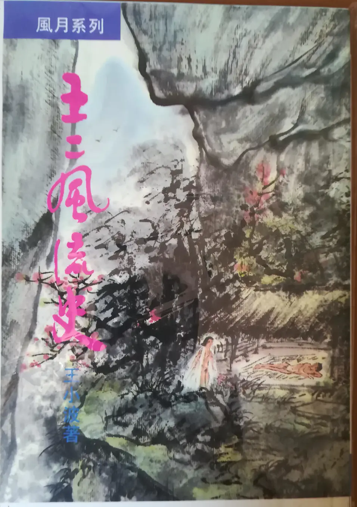

《黄金时代》书里面包含了五篇小说:《黄金时代》、《三十而立》、《似水流年》、《革命时期的爱情》、《我的阴阳两界》。
《黄金时代》是四十多岁的王二在追忆自己二十多岁在云南插队的经历（也写了后来和陈清扬相聚在北京的一个小场景）。
《三十而立》是王二三十多岁的事情。不是追忆，就是第一人称限知叙事。
《似水年华》里王二已经四十不惑了，然后回顾自己从十几岁到四十来岁中的流年经历，自己作为旁观者，写的主要是李先生**血肿和线条谈恋爱、贺先生跳楼，刘老先生死等事情，大多以少年的视角来观察的。
一九五○年出生。
一九六六至一九六八年，“文化革命”。住在矿院，是一名中学生，目睹了贺先生跳楼自杀和李先生龟头血肿。
一九六八年，和许由在地下室造炸药玩，出了事故，大倒其霉。先被专政，后被捕，挨了很多揍。
一九六九至一九七二年，被释放。到云南插队。认识陈清杨。
一九七二年至一九七七年、在京郊插队。与小转铃交好。与刘先生结识，刘老先生死。后来上调回城，在街道厂当工人。
一九七七至一九八一年，上大学。
一九八一至一九八四年，毕业，三十而立。与二妞子结婚。
一九八五至一九九○年，与旧情人线条重逢，很惊讶地发现她己嫁了李先生。出国读学位。丧父。离婚。回国。
一九九○年，四十岁。
1 一天我二十一岁，在我一生的黄金时代，我有好多奢望。我想爱，想吃，还想在一瞬间变成天上半明半暗的云。
——《黄金时代》
2 照我的看法，每个人的本性都是好吃懒做，好色贪淫，假如你克勤克俭，守身如玉，这就犯了矫饰之罪，比好吃懒做、好色贪淫更可恶。
——《黄金时代》
3 其实伟大友谊不真也不假，就如世上一切东西一样，你信它是真，它就真下去。你疑它是假，它就是假的。
——《黄金时代》
4 但是这没有必要说出来。没必要说的话就不说。
——《黄金时代》
5 后来我再不肯带他们去那些地方看，反正我说我没去国外，他们不信。带他们去看了，他们还是不信。没必要做的事就别做。
——《黄金时代》
6 就在这一瞬间，我解脱了一切苦恼，回到存在本身。
——《三十而立》
7 这种事怎么会忘记？我有点怀疑自己是存心忘记的，这是件很奇怪的事。
——《三十而立》
8 很明显，这个世界里存在着两个体系，一个来自生存的必要，一个来自存在本身，于是乎对每一个问题同时存在两个答案。
——《三十而立》
9 我写那篇东西时太年轻，发了很多过激议论。只有一点还算明白：我没有批判虚伪本身。不独如此，我认为虚伪是伟大的文明。
——《三十而立》
10 在我看来，存在本身有无穷的魅力，为此值得把虚名浮利全部放弃。我不想去骗别人，受逼迫时又当别论。如此说来，我得不到什么好处。但是，假如我不存在，好处又有什么用？
——《三十而立》
11 当时我还写道，以后我要真诚地做一切事情，我要像笛卡尔一样思辨，像堂吉诃德一样攻击风车。无论写诗还是做爱，都要以极大的真诚完成。眼前就是罗得岛，我就在这里跳跃——我这么做什么都不为，这就是存在本身。
——《三十而立》
12 在我看来，春天里一棵小草生长，它没有什么目的。风起时一匹公马发情，它也没有什么目的。草长马发情，绝非表演给什么人看的，这就是存在本身。
我要抱着草长马发情的伟大真诚去做一切事，而不是在人前羞羞答答地表演。在我看来，人都是为了要表演，失去了自己的存在。
——《三十而立》
13 忽然之间心底涌起强烈的渴望，前所未有：我要爱，要生活，把眼前的一世当做一百世一样。
——《三十而立》
14 虽然岁月如流，什么都会过去，但总有些东西发生了就不能抹煞。
——《似水流年》
15 似水流年是一个人所有的一切，只有这个东西，才真正归你所有。其余的一切，都是片刻的欢娱和不幸，转眼间就已跑到那似水流年里去了。
——《似水流年》
16 但是煮屎的事则绝不可少，因为它是似水流年中的一条线索。它说明有过一个时候，所有的人都要当傻X，除此之外，别无选择。
——《似水流年》
